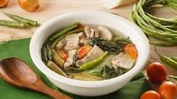

Sinigang Recipe

Description
Sinigang is a Filipino soup or stew characterized by its sour and savory taste.
It is most often associated with tamarind, although it can use other sour fruits
and leaves as the souring agent. It is one of the more popular dishes in Filipino cuisine.
The soup is usually accompanied by rice
Ingredients
- 1 kg Salmon
- 2 tbp Salt
- 1 tbp Oil
- 1 Spinach
- 2 cups water
- 1 pinch of ground pepper
- 1 sachet Sinigang mix
- onion
- ginger
Steps
- Saute onion and ginder wait until its translucent
- Put salmon wait until it turn golden brown
- Put 2 cups of water wait until it boils
- When its boiling put your salt, pepper and sinigang mix with your desired amount
- when boing put the vegies spinach
- Wait for few seconds and its READY TO SERVE ENJOY!